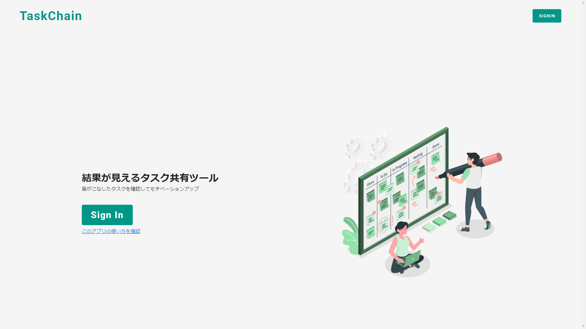
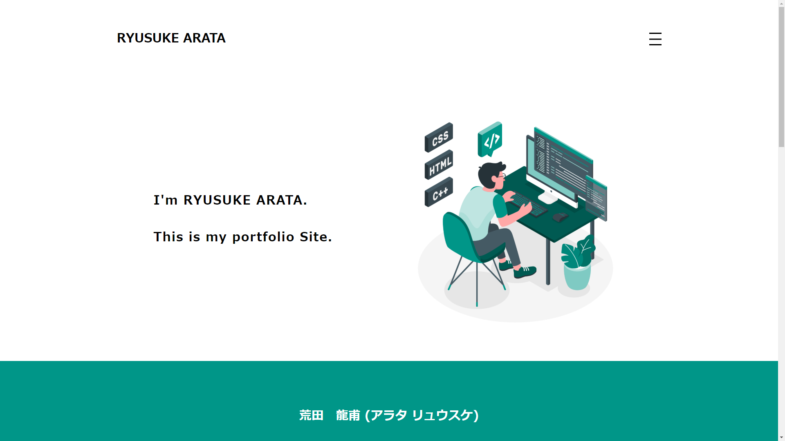

RYUSUKE ARATA
I'm RYUSUKE ARATA.
This is my portfolio Site.

荒田 龍甫 (アラタ リュウスケ)
1998年11月30日生まれ(現在21歳)
2020年2月より独学でのコーディングの勉強を始めました。
高専でC言語を勉強したおかげか、スムーズに勉強を進めることが出来ています。
現在もコードのさらなる保守性(可読性)、合理性の向上を図るために日々コーディングの勉強に励んでいます。
自分はアイデアを出すことを得意としており、その長所を活かして第13回の全国高専デザインコンペティションでは
経済産業省の松田氏より、審査員特別賞を頂くことができました。
Markup language
Language
HTML, CSS
CSS preprocessor
SCSS
CSS framework
BootStrap
Programming language
Language
JavaScript
AltJS
TypeScript
JS framework
Vue.js
Developer tools
Version control system
Git
Git repository hosting service
GitHub
Task runner
Gulp
code editor
VSCode
Backend as a service
firebase
Works

TaskChain
自分で立てたタスクをサボってしまう...。
そこで思いついたのがタスク共有ツール
皆がこなしたタスクを画像で見ることができるWebアプリです。
使用言語
HTML, CSS, JavaScript
CSSプリプロセッサ
SCSS
JSフレームワーク
Vue.js
VueUIライブラリ
Vuetify
BaaS
Firebase
Vueエコシステム
VueRouter, VueCLI
JSライブラリ
Compressor.js
トランスコンパイラ
Babel

本サイト
自分のポートフォリオを掲載するために、本サイトを立ち上げました。
使用言語
HTML, CSS, JavaScript
CSSプリプロセッサ
SCSS
AltJS
TypeScript
バージョン管理ツール
Git
Gitリポジトリホスティングサービス
GitHub
バージョン管理GUIツール
Source Tree
タスクランナー
Gulp